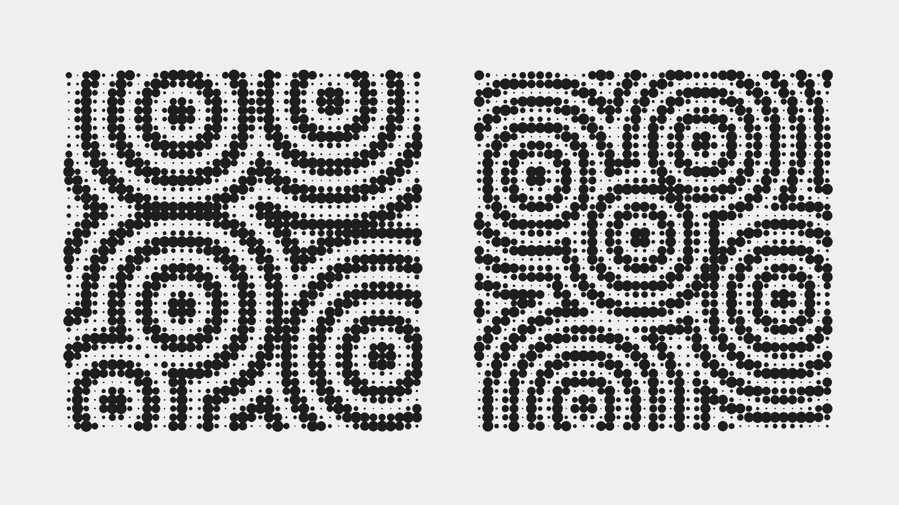

RHINOVIZCOM01 · Closest point · sine · remap
DRILLED LIGHT
A grid of points, each one asking how far it is from the nearest attractor. That distance runs through a sine so the dots grow and shrink in rings, then gets remapped to a real drill range. I built the same field three ways, with attractors from Rhino points, from Construct Point and sliders, and from MD Sliders, so the pattern can be tuned by hand or by drag.
INPUT square grid · 5 attractors FIELD Closest Point distance → sine × frequency → remap OUTPUT one circle per point, radius 0.05 → 0.62 CONTROL Rhino points · Construct Point + sliders · MD Sliders
| Material | 3 mm aluminium sheet |
|---|---|
| Finish | Brushed, clear anodise |
| Colour | Natural aluminium · Tigre Orange backlight |
| Process | CNC drilled with stepped bit sizes snapped to the remapped radii |
| Light | Edge-lit LED panel 40 mm behind, on standoffs |